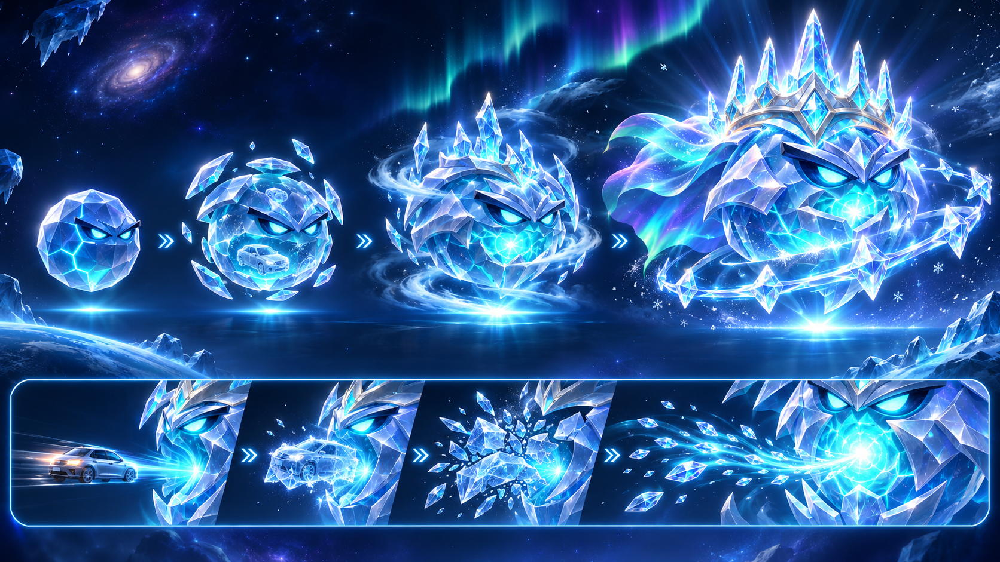
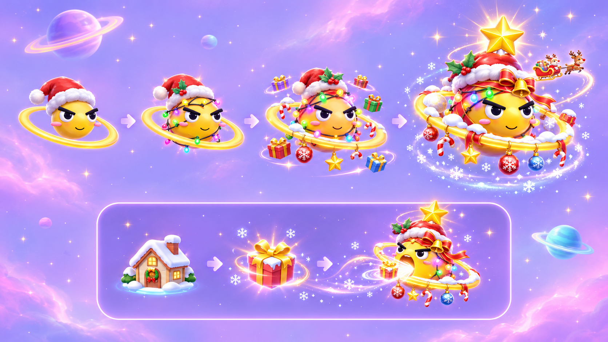
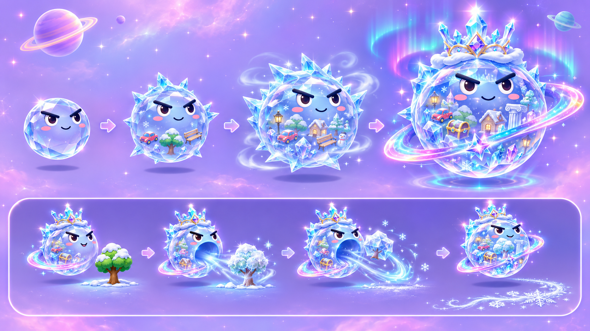
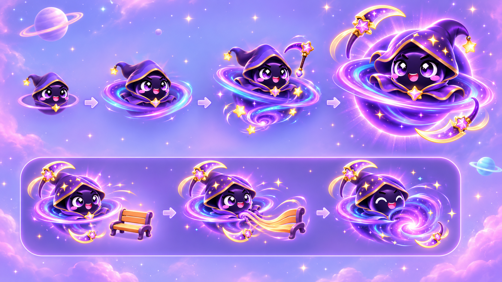
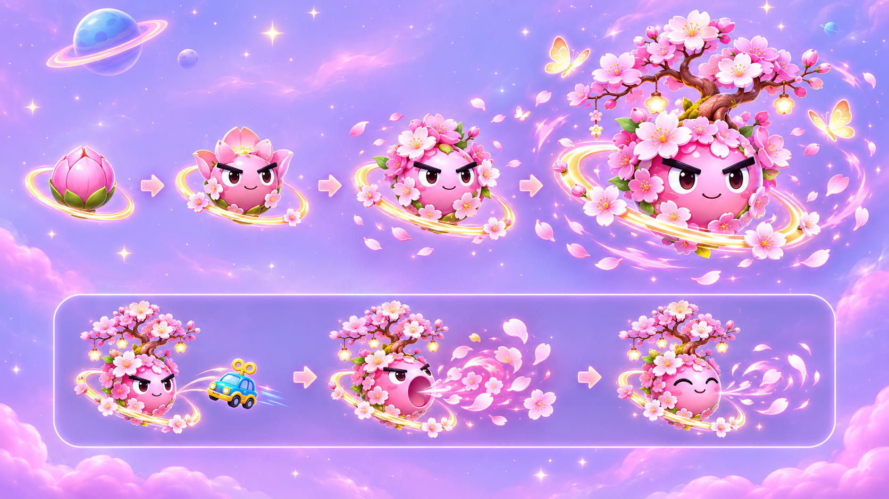

새 전설 스킨 콘셉트 4종
2026년 11월 24일 시안. 위 줄은 한 판 안에서 먹을수록 바뀌는 4단계, 아래 상자는 사물을 먹는 순간의 연출입니다. 이미지 생성(OpenAI gpt-image-2)으로 만든 방향 시안이며 실제 게임 화면이 아닙니다.
새 방향 시험: 얼음 「서리 군주」 (덜 귀엽고 더 웅장하게)

공 + 모자 대신 몸 자체가 빛나는 얼음 갑옷과 에너지 핵. 단계마다 갑옷이 떠오르고 첨탑·왕관·오로라 망토가 생김. 먹을 때 사물이 통째로 얼었다가 산산조각 나 핵으로 빨려듦. 아래 4종은 첫 시안(귀여운 방향)입니다.
1. 크리스마스 「선물 별」

산타 모자 → 꼬마전구가 감기며 불이 켜짐 → 장식볼·선물상자 → 트리 별과 루돌프 썰매 위성. 먹은 사물은 리본 선물상자로 변해 빨려 들어갑니다.
2. 얼음 「서리 왕자」

투명 얼음 구슬 → 먹은 사물이 몸 속에 얼어붙어 보임 → 얼음 가시가 자람 → 얼음 왕관과 오로라 고리. 먹을 때 사물이 하얗게 얼고 지나간 자리에 서리가 남습니다.
3. 블랙홀 「꼬마 사신」

두건 쓴 작은 블랙홀 → 소용돌이 고리가 커지고 빨라짐 → 별이 빨려들고 낫 등장 → 낫 위성 2개와 보라 오라. 먹을 때 사물이 엿가락처럼 늘어나 소용돌이로 들어갑니다.
4. 벚꽃 「봄 꽃망울」

꽃봉오리 → 꽃잎이 열림 → 만개 → 몸에서 벚꽃 가지가 자라고 나비가 돎. 먹을 때 사물이 꽃잎으로 터져 흩날립니다.
| 항목 | 정한 내용 |
|---|---|
| 얻는 법 | 보석 판매 + 시즌 패스 보상 |
| 기존 전설 2종 | 일반 등급으로 내림 (황금 왕관 코인 3,000 · 사이버 바이저 코인 4,000) |
| 다음 단계 | 1종을 실제 게임에 프로토타입으로 넣고 캡처 영상으로 판정 |